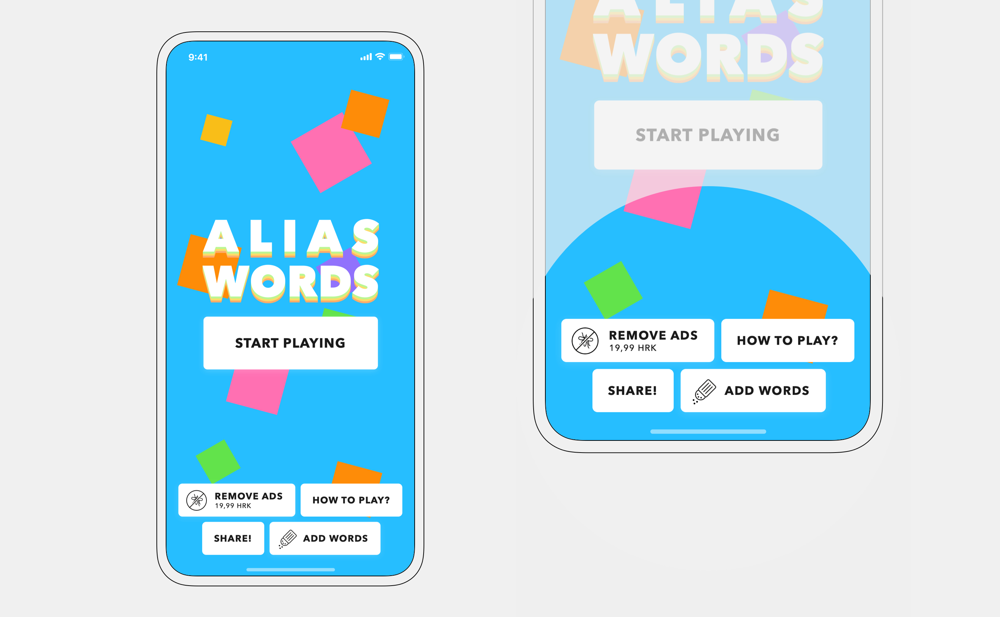

Alias Words — iOS, Android UI Design, UX Design
Designing a perfect social game for your next party — available on iOS and Android.
Players have to describe a given word using its synonyms, without using the root word. Alias is available in 5 languages and has been installed over 300.000 times. Currently, there are over 80.000 active players.
The challenge
Translating the fun spirit of the game to a mobile app. Most users already knew the rules but had 2 main concerns — whose turn it is to explain the words, and how much game time remains.
My process
Research into similar apps guided the direction of the design. Detailed analysis and playing the game helped me identify the main pain point — the time from opening the app to playing a game.
Results
I branded the app with vivid colors, patterns, and playful animations representing the fun spirit of the game. The most common game — consisting of 2 teams — can be started in two taps. A timer clearly shows the remaining time and instructions at the beginning of every round inform the users about player order.
I also focused on timely informing the players about the next steps in the game.
Inviting design
Homescreen is playful with background animation, inviting users to start a new game. Secondary options are presented on the bottom.
A major complaint from power-players (over 30h of gameplay) was a lack of new words — when 3500 words are not enough, users can add their own.

Play a game
Setting up a new game can be done in as little as two taps. Two teams are prefilled by default since that is the most common game type.
Teams are deleted through an engaging interaction — accompanied with fun animations.
In the second step, users can set up their game according to their preferences.
Values jump while editing so they don't get obstructed by fingers.
Real fun
A timer is displayed numerically and graphically — a horizontal bar decreases in height as time goes by. The active/next player is shown at the bottom. The play screen is color-coded to help players immediately realize whose turn it is.

Sometimes, players mark their answers incorrectly and there are discussions whether the guess was fair. For that reason, I added answer-editing functionality. Players can edit their answers after their round ends.
— thank you